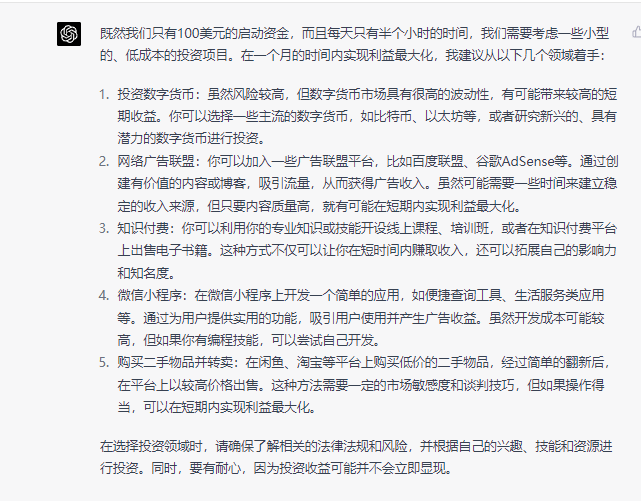
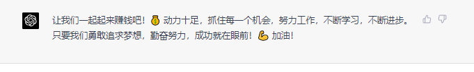

Hello，各位观众朋友们大家好啊！欢迎观看本次ChatGPT赚钱比赛。我是SeeDAO成员HotWolf，很荣幸为您带来本次ChatGPT赚钱比赛报道。
4.1日即将开赛，山雨欲来风满楼之势已有，我们的8位选手在各自的赛道上陆续找到了落脚点。
首先是二号选手酸奶在询问了GPT老板半个小时后确定了【抄底二手书】的路线，选定了《数据结构C语言版》。GPT老板的理由是：这本教材主要介绍了数据结构的基本概念和相关算法，适用于计算机类专业的本科生和研究生。在二手市场上，这本书通常具有较高的需求和保值率。理论上来讲并无逻辑问题，但还是希望GPT的推测能够符合市场规律，不要发生一些理论上没有预料到的事情。“到时候卖不出去全捐给seedao”酸奶打趣着说。

接下来是三号选手栗子，他的GPT老板让他去做短视频，这显然有一定的难度。而GPT建议的内容：“与AI合作创作一首歌!”却和它的能力不兼容，GPT既不会写五线谱也不会合成歌。这让栗子颇为头痛。
四号选手Alex找到了不同的切入点。他问chatgpt怎么看cz被起诉，结果GPT老板不以为意，他就充值okx买入ETH，今天早上就涨回来获利了，尽管只有7个点的收益。但是希望他可以滚起雪球。
六号选手Jomosis得到的建议是“二手交易，手机配件零售和在线教育”，他认为这几条建议并不合适，于是想探索本地环保创新的创业公司，看看能不能说服他们让他带着gpt当一日店长，或者其他岗位。
SeeDAO选手的选题各不相同，DAO外的风光更是五光十色。
抖音某博主用GPT设计出炒币策略，实盘跑后一个月预测有20%的利润，目前已有10%了。
著名的网红Jackson让两名员工开展"greengadgetguru.com"主职工作的同时，Jackson 在 HustleGPT 的建议下，一直在拓展外部业务，此时有超过 1,603 名成员加入了#HustleGPT挑战。

ChatGPT创业的故事还在继续，而我们SeeDAO的火苗刚刚开始。让我们期待4月赛场上他们的表现！请关注SeeDAO官方号，本台记者HotWolf将持续为您解说实时赛况。